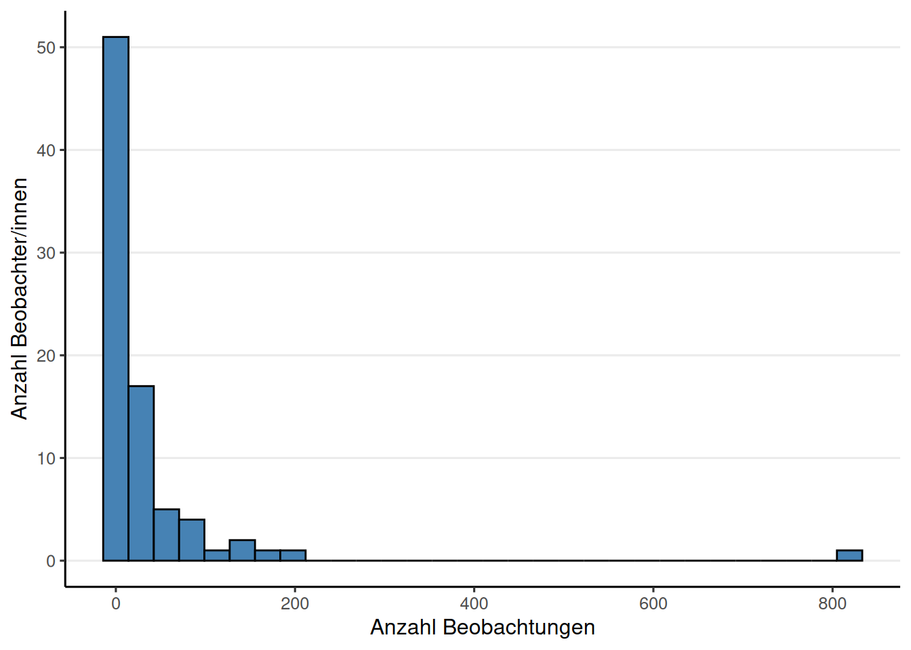
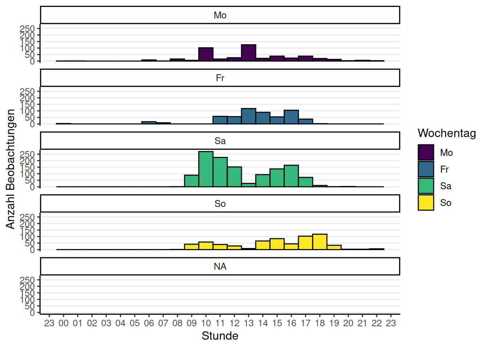

City Nature Challenge 2025: St. Pölten
https://www.inaturalist.org/projects/city-nature-challenge-2025-st-poelten
Allgemeine Information
Insgesamt wurden 127 Beobachtungen von 6 Beobachterinnen und Beobachtern hochgeladen. Dies ergibt einen Mittelwert von 21.2 und einen Median von 19 Beobachtungen pro Person. Auf Artebene (Spezies-Ebene) wurden 49 unterschiedliche Arten beobachtet.

Beobachtungskarte
Fun Facts
Der/Die User/in (auch bekannt als Birder) Schaugenau Zechel hat mit 7 Vogelbeobachtungen die meisten Beiträge in dieser Kategorie hochgeladen. Besonders häufig, nämlich 2 Mal, hat der/die User/in ronald lintner die Art Allium ursinum beobachtet. Das Taxon mit dem längsten wissenschaftlichen Namen ist Anemonoides ranunculoides mit 25 Zeichen.
Top Beobachter/innen
Diese Liste zeigt die Beobachter/innen, geordnet nach der Gesamtzahl ihrer Beobachtungen (inklusive Mehrfachbeobachtungen derselben Art).
Top Bestimmer/Innen (iNaturalist)
Die hochgeladenen Beobachtungen gewinnen erst durch die wertvolle Arbeit der Bestimmer/innen an wissenschaftlicher Bedeutung. Ein großes Dankeschön an alle, die durch ihre Bestimmungen iNaturalist zu dem machen, was es heute ist!
Top Beobachter/innen mit den meisten unterschiedlichen Arten
Gezählt werden nur Beobachtungen, die mindestens auf Artebene bestimmt und als “Research Grade” (iNaturalist) eingestuft oder positiv validiert (Observation.org) wurden.
Top Taxa (Spezies-Ebene)
Diese Liste enthält die am häufigsten beobachteten und bereits auf Artebene bestimmten Taxa (“Research Grade” oder positiv validiert).
Unique Taxa mit Research-Grade
Einzigartige Funde, die nur von einer einzigen Person während der Challenge beobachtet und hochgeladen wurden, sind besonders erfreulich.
Raritäten (observation.org)
Observation.org verwendet eine eigene Einstufung für die Seltenheit von Beobachtungen, die sich von der iNaturalist-Einteilung unterscheidet. Die Verteilung dieser Raritätsstufen ist unten dargestellt.
[1] "Noch keine Beobachtungen"Beobachtungen mit Rarität “selten” (observation.org)
Die folgende Liste zeigt Beobachtungen, die auf observation.org als “selten” eingestuft wurden.
[1] "Noch keine Beobachtungen"Beobachtungs Qualität (iNaturalist)
iNaturalist teilt die Beobachtungsqualität in drei Stufen ein: - Zwanglos (casual): Beobachtungen, bei denen Datum, Ort oder ein Belegfoto/-ton fehlt. - Benötigt Bestimmung (needs_id): Beobachtungen, bei denen noch keine übereinstimmende Bestimmung durch mindestens zwei Personen vorliegt. - Forschungsqualität (research): Bestätigte Beobachtungen auf Artebene.

Beobachtungen Phylum (iNaturalist)

Insecta - Ordnungen (iNaturalist)

Beobachtungen mit Konflikt Bestimmungen (iNaturalist)
Diese Tabelle listet Beobachtungen auf, bei denen Uneinigkeit über das bestimmte Taxon zwischen den Usern besteht.
Verifizierung Status (observation.org)
Observation.org klassifiziert Beobachtungen nach ihrem Validierungsstatus.
[1] "Noch keine Beobachtungen"Beobachtungen die nicht Verizifiert werden können (observation.org)
Hier werden Beobachtungen von observation.org angezeigt, die nicht verifiziert werden konnten oder deren Bestimmung nicht genehmigt wurde.
[1] "Noch keine Beobachtungen"